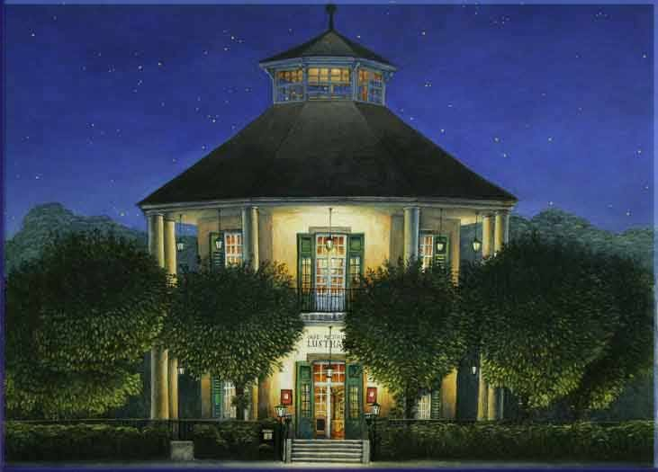
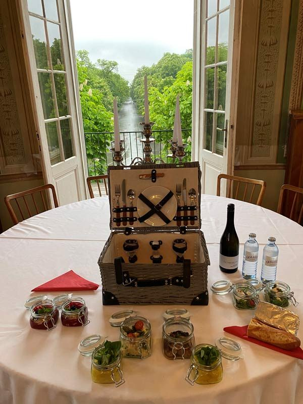

Vorspeisen & Suppen
- Ziegenfrischkäse auf Feigensalat mit Polentacroutons9,50
- Geröstete Eierschwammerl auf bunten Blattsalaten13,00
- Kräftige Rindsuppe mit hausgemachten Frittaten5,70

Freudenau 254 · 1020 Wien
Café-Restaurant im kaiserlichen Pavillon von 1783: Wiener Küche mit monatlich wechselnder Karte, hauseigene Patisserie, Brunch im Jagdsaal – und seit Generationen die Bühne für Hochzeiten und Feste im Prater.
Café-Restaurant
Das Ambiente vermittelt eine Mischung aus historischer, stilvoller Eleganz und zeitgenössischer Lockerheit: perfekte Kulisse für ein Rendezvous, einen Mittagslunch, Musestunden oder den Abend-Cocktail.
Wird nachmittags die hauseigene Patisserie geschlemmert, genießt man abends die guten Weine, bis es dämmert. Die Hauptallee läuft zwischen ihren Kastanienbäumen pfeilgerade vom Praterstern bis zum Lusthaus – von der Innenstadt sind es zehn Fahrminuten, Parkplätze gibt es rund um das Haus in ausreichender Anzahl.
Weil wir häufig ausgebucht sind oder das Restaurant wegen einer Veranstaltung geschlossen bleibt, ersuchen wir um Tischreservierung.
Anlässe bis 200 Personen in den Räumen des Restaurants.
Sitzplätze auf der teilweise überdachten Terrasse.
Sitzplätze mit Blick über die Praterwipfel.
Das verglaste Turmstüberl für 2 bis 12 Personen.
Aus der Küche
Ein Auszug aus der aktuellen Speisekarte. Alle Preise in Euro, inklusive aller Steuern.
Feste & Veranstaltungen
Vom Festmahl für Firmlinge über Hochzeiten, Jubilarfeiern, Firmenevents, Film- und Theaterabende bis zu Kongressen und Präsentationen: Stilsicherheit, Flexibilität und geeignete Infrastruktur erlauben es uns, für jede Veranstaltung das treffende Ambiente zu schaffen.
2–12 Personen
Das rundum verglaste Turmstüberl am Dach, von dem aus man über die Wipfel der Praterbäume blickt. Miete auf Anfrage.
bis 200 Personen
Fünf Minuten vom Lusthaus entfernt am Galopp-Rennplatz, mit Sonnenterrasse über der 2.800 Meter langen Rennbahn. Catering aus der Lusthausküche.
Hochzeiten
Die Wallfahrtskirche Maria Grün in der Waldlichtung ist beliebte Trauungskirche – das Fest folgt im benachbarten Lusthaus.

Aktuelles
Couvert € 3,–. Kinder bis 5 Jahre frei, von 6 bis 9 Jahren halber Preis. Änderungen vorbehalten. Wir bitten um rechtzeitige Reservierung.
Ausgezeichnet
Anfrage online stellen – oder direkt anrufen. Wir melden uns mit einem konkreten Vorschlag zurück.